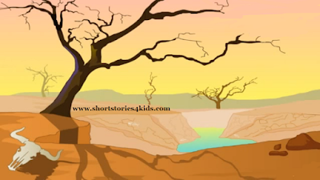

Once there was a tortoise lived in a pond. Two Swans used to visit the same pond everyday. The tortoise was very talkative. It used to talk to swans for a very long time. Tortoise and Swans become good friends. All of them were happy. Once there was a drought and it lasted for long time.

As a result, the water in the pond got dry. There was no water for them to drink. The swans decided to move out to some other place. The tortoise asked swans to take him alone with them. The swans suggested a plan, according to which tortoise would have to hold a piece of stick by its mouth and the swans will hold its two ends of that stick.

They told the tortoise not to speak otherwise it would fall and die. The tortoise understood and promised them not to open its mouth during that journey. while crossing a village, many saw the tortoise and got surprised.

They shouted at the tortoise and made fun of him. Tortoise got angry and opened its mouth to speak. But as it opened its mouth, it fell down on the ground. The swans were very shocked to see their friend's end. The tortoise died because of its impatience and foolishness.

Moral Of the Story : Always listen to friendly advice.